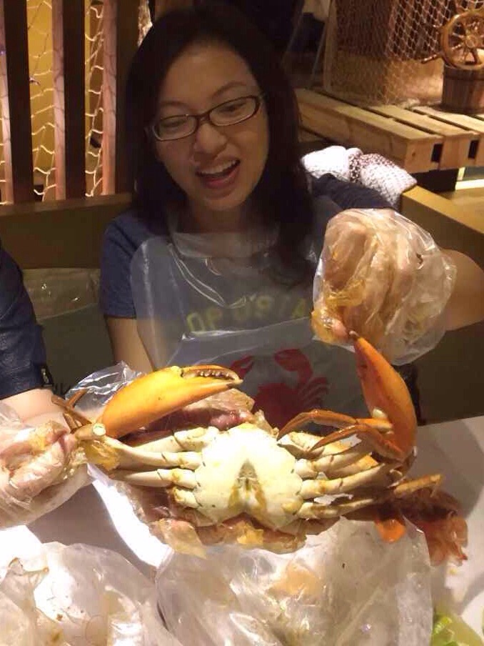
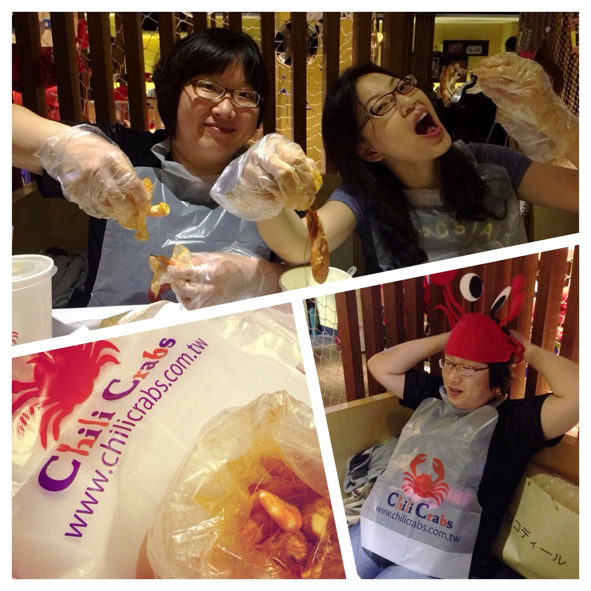

前陣子發現一間很特別的美式餐廳！它是一間蝦蟹專賣店；餐桌上所有的蝦子螃蟹都是用塑膠袋一袋一袋裝著，你可以選擇帶或不帶手套，用最豪邁的方式直接手扒吃個過癮！聽說這樣的店在美國很多，可惜美國太遠沒機會吃到。所以一聽說台北新開了這種美式風格的海產店，我們立刻揪團嘗鮮去囉！
當天我們點了炸雞翅、炸薯條、巧達濃湯等前菜先墊墊飢餓的肚子，味道不錯，完全符合我們對美式食物的期待與想像。
接下來，進入今天的重頭戲，
裝在塑膠袋裡的蝦蟹和着店家特製的調味醬，真的會讓人吮指回味！真是好好味呀～
整體而言，這間餐廳風格獨樹一格，白蝦、石蟹也都很新鮮又美味；加上店面的空間十分寬敞，實在非常適合家庭或朋友聚餐吃吃喝喝！
看了以下電視節目專訪才知道，原來可以把食物通通倒在桌上吃！
總之，當你前腳踏到店裡，就可以把優雅的餐桌禮儀通通忘光了！在這裡，大快朵頤才是王道！XD